| « Previous Article | Home | Next Article » |
With the introduction of many new Mega Evolutions in ORAS, many Pokémon will experience huge shifts in viability that will directly affect the environments of their current tiers, as well as the tiers they are likely to rise to as a result of getting Mega Evolutions. With the release of ORAS looming closer, here are the thoughts gathered by some of Smogon's best players, tutors, and contributors from all the official Single Battle tiers from NU to Ubers, which includes predictions on the future tiering of these Pokémon as well as how they might impact the metagames in general. Without further ado, let's begin!
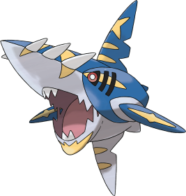
Confirmed Typing: Water/Dark
Confirmed Ability: Strong Jaw
Base stats: 70 HP / 140 Atk / 70 Def / 110 SpA / 65 SpD / 105 Spe
Mega Sharpedo is one of the few new Mega Evolutions that can actually make immediate use of its original form's ability before converting. All of its stats increase, which includes a much-needed improvement in its bulk. Protect will allow Sharpedo to gather +1 Speed without suffering damage, before Mega Evolving on the following turn and wreaking havoc on the opponent's team. Strong Jaw, in tandem with STAB, will make Mega Sharpedo's Crunch have a massive 180 Base Power, which is sure to inflict severe damage. It also boosts Ice Fang for it, as coverage to bite down on the Grass-types that might wall its Water-type STAB.
Mega Sharpedo can be used in OU, but it won't be a top threat. Crunch, Ice Fang, Waterfall, and Protect will almost certainly be the standard set to take advantage of both Speed Boost and Strong Jaw. This set has good coverage, but a few Pokémon need to be removed or weakened quite a bit before Mega Sharpedo can comfortably put in work. Offensive Talonflame bypasses Mega Sharpedo's Speed boosts and almost always OHKOes it after Stealth Rock damage, while Choice Band Talonflame OHKOes even without any prior damage. Mach Punch users are more uncommon, but Pokémon such as Conkeldurr and Breloom KO Mega Sharpedo with Mach Punch after only a little bit of prior damage. While Mega Sharpedo is fast, it can also be easily revenge killed by fast Choice Scarf users, such as Keldeo. In addition to Keldeo, Azumarill and Mega Gyarados, both of which are fairly bulky, resist every attack on the set. Ferrothorn also is not 2HKOed by any move on the set, while Thundurus renders it useless with Thunder Wave. If opposing Pokémon such as these are taken care of, though, Mega Sharpedo can be very threatening. Crunch is a strong, spammable attack, and generally this "standard" set provides pretty good coverage, making Mega Sharpedo annoying for offense to face at times. While Mega Sharpedo isn't a bad Pokémon, it's still not bulky nor incredibly strong, so although it can work in OU, it probably won't be seen much simply because there are so many other great Mega Pokémon that Sharpedo will have to compete with for a team's Mega slot. I expect to see it shine in UU, however.
Sharpedo is already a top threat in the RU tier right now, but things are looking even brighter now that it's confirmed to get a Mega Evolution in ORAS. Many people began to speculate about it after the E3 Trailer where Archie and Maxie were seen wearing strange objects that resembled possible Mega Evolution equipment. Like a few other Mega Evolutions, Sharpedo gets a boost in every one of its stats. It also picks up Strong Jaws for its ability, which ensures that Mega Sharpedo's STAB Crunch will hurt a lot. Mega Sharpedo will likely use the current physical Speed Boost set that many competitive players use in RU and UU as its Mega set. As the current set runs Protect anyway to net a Speed Boost, Sharpedo likely won't need to Mega Evolve immediately and could benefit from +1 Speed. However, the problem for Mega Sharpedo lies in its stat boosts. While the boost in bulk is very welcome, only Crunch, Ice Fang, and Poison Fang will actually do more damage than a regular Life Orb Sharpedo does, thus limiting the use of Mega Sharpedo severely. While it may rise to UU, I think it's actually more likely for Sharpedo to remain in RU. That said, Sharpedo will likely remain as one of the top threats in RU that can utilize a Mega Evolution to keep previous checks to it like Hitmonlee and Fletchinder from revenge killing it due to the increase in bulk.
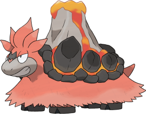
Confirmed Typing: Fire/Ground
Confirmed Ability: Sheer Force
Base stats: 70 HP / 120 Atk / 100 Def / 145 SpA / 105 SpD / 20 Spe
Mega Camerupt gains quite a bit more power and bulk at the cost of Speed, which it could never make good use of in the first place, so it's a solid trade-off. The Sheer Force ability will negate any chance of burn status from Mega Camerupt's Fire-type attacks, but it also makes them extremely powerful; Fire Blast from Mega Camerupt, factoring in STAB and Sheer Force, will effectively have a massive 214.5 Base Power and will roast anything that does not resist it, and its STAB Earth Power also gets the Sheer Force boost. Unfortunately though, Mega Camerupt's attacking movepool isn't very impressive, as the only other notable attacks it has access to are Flash Cannon, Solar Beam, and Rock Slide.
Its good stats and ability are held back by its extremely shallow movepool and the easily predictable move choices that go with it. This is the worst Mega that was ever introduced, in my opinion, and that includes Mega Audino. A lot of people are making a big deal out of the fact that it has base 145 Special Attack and Sheer Force to back up its moves, when in reality, that's just as strong as Life Orb Chandelure (which is far from unmanageable), and a hell of a lot slower. With the possible exception of Mega Audino, I think Mega Camerupt is going to be the only Mega allowed in NU, and it might even end up banned after a while. However, there's no way it would make it in RU if it got booted from NU, because Assault Vest Slowking is very common there and would bully it all over the place; it can switch in against Camerupt fearlessly and either KO it or force it out. Slowking also outspeeds Mega Camerupt, which is hilarious. With that said, my prediction is that it's going to stay NU, and if it gets banned from there, it's not going higher than BL3.
Mega Camerupt is among my favourites of the new Mega Evolutions, not because it's amazing, but because it provides Camerupt with a new niche in NU as a wallbreaker. Very few Pokémon can stand up to a Sheer Force Fire Blast + Earthquake combo, and one of the best counters to it, Altaria, is packing up to leave NU when ORAS comes around. Camerupt still has very respectable bulk and will serve as one of the best checks to Electric-types, and it will finally shut down Choice Scarf Rotom completely due to no longer being Trick bait. Of course, Camerupt will be an amazing choice on Trick Room teams, but I expect it to find its home on bulky offense in NU.
Confirmed Typing: Dragon/Fairy
Confirmed Ability: Pixilate
Base stats: 75 HP / 110 Atk / 110 Def / 110 SpA / 105 SpD / 80 Spe
Mega Altaria has a unique typing in Dragon / Fairy that gives it many important resistances and removes its Stealth Rock weakness, at the cost of gaining weaknesses to Poison and Steel as well as grounded entry hazards. Its decent offensive stats combined with the Pixilate ability allow it to run both physical and special sets, and its increase in physical bulk combined with Roost allows it more longevity on the battlefield. While none of its stats stand out as amazing, it is a mixed bag capable of various offensive sets as well as a role as a Knock Off shield and Heal Bell cleric for its team, making it usable with many different strategies and archetypes.
Altaria is generally the forgotten Dragon of RSE, but Game Freak decided to put it back in the spotlight with a Mega Evolution. Perhaps we should have seen its new typing coming, as it oddly could learn Moonblast as a Dragon-type, but its Mega Evolution is a Dragon / Fairy type. This typing is amazing defensively, with resistances to Dark, Fighting, Water, Fire, Grass, Electric, Bug, and a complete immunity to Dragon! It has already been confirmed to receive a sizable boost to its Attack and Special Attack, a boost to its Defense, and is to have Pixilate as its ability. A good boost to Altaria's current 70 / 70 attacking stats will be very welcome to take advantage of Pixilate. Mega Altaria gets a whopping +40 boost to both of its offenses, thus allowing it to take advantage of Pixilate-boosted Hyper Voice and Return for special and physical sets, respectively.
Altaria also has access to the coveted Dragon Dance to enhance the effectiveness of physical sets to the point where it could possibly sweep many teams. Special sets lack Dragon Dance, but have the flexibility to go different ways thanks to Altaria's access to Roost and Agility. Special sets using Roost will likely take more advantage of Mega Altaria's amazing set of resistances to pivot into attacks and unleash powerful Pixilate-boosted Hyper Voices while staying healthy with Roost. Agility variants will focus more on offensive firepower, using Mega Altaria's resistances to set up a sweep. A defensive set is also not out of the question to take full advantage of Mega Altaria's amazing resistances; Roost, Heal Bell, and Perish Song make defensive Mega Altaria a very real possibility. Altaria might be in the depths of NU now, but it's pretty safe to say that it won't be for much longer. It is most likely that Mega Altaria will land in UU as one of the best offensive pivots in the tier. With Mega Salamence, Latias, Latios, and Venusaur around in OU, it will be difficult for Mega Altaria to find a home there, but it has the potential to see some usage there as well thanks to its unique typing, solid offensive presence, and ability to hit most OU Pokémon for heavy damage between Hyper Voice, Fire Blast, and Hidden Power Ground or Earthquake.
Mega Altaria looks like it's going to be absolutely awesome in whatever tier it ends up in. Dragon / Fairy is an amazing defensive typing, in my opinion (resists Scald, Knock Off, U-turn, Volt Switch, and a bunch of common attacking types), and Altaria definitely has the support movepool to pull its weight on teams that'd need those resistances the most, with some great options including Roost, Heal Bell, and Perish Song. Altaria isn't limited to defensive sets, though, because Pixilate and those solid boosts to both of Altaria's attacking stats make an offensive set at least worth trying. Dragon Dance looks especially promising, given Altaria has more than enough bulk and resistances to set up multiple Dragon Dances, and it can use Roost to heal off all damage taken while doing so (hell, I could even see Dragon Dance / Roost / Heal Bell / Return being a thing, as Fairy's not bad as a mono-attacking type in my opinion). Game Freak did a really good job with this in my opinion; they made what was arguably the worst fully-evolved Dragon-type in the game great.
I think Mega Altaria is really overhyped, even in the lower tiers. Even though its defensive typing is really awesome, it has very average stats for a Mega and does not appear to excel in any one thing. There are many more powerful setup sweepers that aren't even Megas, and there are better clerics that can pass Wish recovery in addition to using Heal Bell, which Mega Altaria cannot do. I feel that Aromatisse and Alomomola will totally outclass Mega Altaria as a supporter in RU for that one reason, and Amoonguss will keep it in check nicely. That said, Mega Altaria is versatile and resists a lot of common moves, but I don't see it going any farther than RU, a tier that is ironically already designed to keep it from getting out of hand. If it got Wish, I'd say it could have a chance to do much better as a team supporter.
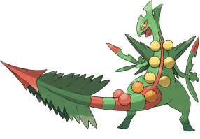
Confirmed Typing: Grass/Dragon
Confirmed Ability: Lightning Rod
Base stats: 70 HP / 110 Atk / 75 Def / 145 SpA / 85 SpD / 145 Spe
Mega Sceptile gains a Dragon typing that definitely does more harm than good. It removes Sceptile's Fire weakness and gives it an even stronger resistance to Water, Grass, and Electric, while adding weaknesses to Dragon and Fairy as well as making its Ice weakness even worse than it originally was. Additionally, the Dragon typing doesn't help much offensively because Dragon-type coverage hits nothing for super effective damage except other Dragon-types, and it doesn't get Draco Meteor to use with it either. What Sceptile does have going for it, however, is a colossal base 145 Special Attack and base 145 Speed, as well as a means to boost its special attacking prowess by switching into Volt Switch and Thunder Wave, courtesy of its new ability, Lightning Rod.
Mega Sceptile will undoubtedly be an excellent cleaner in UU, given its base 145 Speed on top of Grass/Dragon offensive typing, which is complemented by coverage moves such as Focus Blast, Earthquake, and Drain Punch for either physical or special sets. Its base 145 Special Attack is nothing to scoff at, allowing specially-based Mega Sceptile to not only outspeed but also 2HKO nearly every offensive Pokémon in the tier, such as Crobat, Haxorus, Hydreigon, Mega Ampharos, Mega Aggron, Azelf, Starmie, Infernape, and Nidoking. Lightning Rod makes it even scarier to deal with if it manages to switch in on an Electric-type move, though failing to predict accurately can be costly. A Substitute + 3 attacks set will most likely be Sceptile's deadliest set in UU, given how easily it can force switches against weakened Pokémon, particularly bulky Water-types. However, a Swords Dance set with Leaf Blade, Dragon Claw, and Earthquake or Drain Punch can be used to success in UU, as Mega Sceptile can lure in and KO most special walls with the appropriate move after a boost, while also functioning as a much stronger late-game cleaner. It still lacks bulk, though, so strong Choice Scarf and priority users can revenge kill Sceptile, and its typing and ability sadly offers it very little defensively aside from a Ground resistance, Fire neutrality, Electric immunity, and a 4x resistance to Water and Grass, so its defensive shortcomings can still be exploited with relative ease.
Sceptile was one of the first Mega Evolutions revealed for ORAS, and it was a pretty obvious choice for a Mega Evolution, with Blaziken already having a Mega Evolution from XY. Sceptile gains a secondary Dragon typing as well as Lightning Rod for an ability upon Mega Evolving. Thanks to Lightning Rod and its Grass typing, the only way to successfully paralyze Mega Sceptile is through the use of Glare or Body Slam. This is welcome news, as Sceptile relies on its Speed to do a lot of damage. Sceptile's +25 Attack boost now allows it to make good use of Swords Dance. Its newfound Dragon typing after Mega Evolution gives it STAB on Outrage. Its secondary STAB move of Leaf Blade for such a set could easily punish most Fairy-types looking to stop Sceptile's Outrages. It also has access to Earthquake and Drain Punch to punish Steel-type switch-ins. A special set is another obvious option, as it now picks up STAB on Dragon Pulse and has a powerful STAB Leaf Storm. Special Sceptile has access to Focus Blast to ensure Steel-types don't have their way with its STAB moves, but it would have a harder time consistently dealing with Fairy-types, as most of them have better Special Defense. Special sets also have the option of running Substitute. With Substitute, Mega Sceptile should run Giga Drain as its Grass-type STAB move to help recover the health lost from making Substitutes. With a Substitute up, Mega Sceptile becomes a nightmare for offensive teams to face thanks to its base 145 Special Attack. Both sets are further boosted by Mega Sceptile's blazing fast base 145 Speed. It's a safe bet that Sceptile will not remain in NU and will rise to a higher tier. But how high can it go? Well, it's safe to say Mega Sceptile will get to UU at worst, but the Substitute + 3 Attacks set could very well be enough to let it rise to OU as one of the top choices for a Mega Evolution on offensive teams.
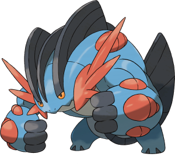
Confirmed Typing: Water/Ground
Confirmed Ability: Swift Swim
Base stats: 100 HP / 150 Atk / 110 Def / 95 SpA / 110 SpD / 70 Spe
Mega Swampert doesn't gain anything unique as far as typing and abilities are concerned, but it is one of the new ORAS Mega Evolutions to have all of its stats increased with nothing taken away from it. With a massive base Attack stat of 150 as well as Swift Swim to outspeed virtually just about everything in the game, it's going to be a monster under rain. The bulk it gains upon Mega Evolving, combined with the fact that it still has only one reasonably uncommon weakness, will allow it to set up its own rain and then run through opposing teams with Earthquake and rain-boosted Waterfall attacks, backed by its great power and doubled Speed. Mega Swampert doesn't have very many attacking options, though, so it will be fairly predictable to play against.
Much like Sceptile, most people expected Swampert to get a Mega Evolution to match Blaziken's ability to Mega Evolve. Swampert's Mega Evolution seems to simply add to the beefy, hard-hitting nature that made competitive players love it so much in ADV and DPP. Thanks to a +40 boost to its already solid Attack stat, Mega Swampert is able to strike hard with its powerful STAB Earthquake and Waterfall. A +20 boost to both of its defenses makes Mega Swampert much harder to bring down in battle. While Swampert is best known for being a beefy tank or physical wall, Mega Swampert seems to focus more on hitting really hard while taking hits when necessary. Swampert retains its Water / Ground typing to ensure it will still be difficult to take down without a Grass-type move. Its new ability, Swift Swim, promises to make Mega Swampert an absolute terror in the rain. Pray that you don't ever have to face down a Mega Swampert being supported by rain. It may end up being the last thing you face in the battle, by the looks of it. While Swampert will see usage in OU, it is unlikely to rise to OU by usage due to its reliance on rain to work at optimal capacity. For this reason, Mega Swampert will likely remain in UU, but don't be surprised if you see it on OU rain teams.
Mega Swampert's incredible 100 / 110 / 110 bulk coupled with its base 150 Attack and usable base 70 Speed in conjunction with its new ability, Swift Swim, will make it a very threatening user of Swift Swim in UU, though I honestly think Mega Swampert will be one of the more underwhelming new Mega Evolutions in the tier. The reason I say this is because unless your team is built directly to augment Mega Swampert (rain), it finds itself losing out in some way to one of its standard sets. For instance, lack of access to Leftovers really makes any kind of a defensive set more of a liability given how easily Swampert is generally worn down, while offensive sets require the move Rain Dance and possibly such support from teammates to be used to the fullest effect. Offensive Mega Swampert sets lacking Rain Dance are pretty much outclassed by its Choice Band set due to the significant difference in power, and even its Curse set due to lack of a usable item. Furthermore, Mega Swampert will only really shine against more offensively-inclined teams in UU. Attackers such as Mega Blastoise, Shaymin, and Hydreigon may be susceptible to Mega Swampert's excellent coverage, but will be able to easily survive any move and deal serious damage back. Moreover, once Swampert's rain turns are all used up, it's forced to use Rain Dance again in order to keep itself from being revenge killed, given how slow it is. Make no mistake, Mega Swampert is definitely a bulky offensive threat that can be used to great effect, but I think it will require a bit more support to use effectively to make it worth the trouble against sturdier defensive Pokémon such as Suicune and Granbull.
With a great defensive typing and enough bulk to reliably set up Rain Dance by itself, as well as enough Speed to outrun even foes with 150 base Speed under rain with the right investment, Mega Swampert is definitely a force to be reckoned with. It could be paired with something that keeps Grass-types on edge, and then be able to sweep the opposing team after their Grass-type(s) has been eliminated. It has Ice Punch to hit them on the switch, though its rather middling Base Power isn't enough to bring them down in that scenario despite its huge base 150 Attack stat. I'd say that Mega Swampert is most dangerous as a late-game sweeper if entry hazards are in play. Goodra might work well with Mega Swampert in a rain core in UU, and it has two abilities that can work nicely with this combination: Hydration and Sap Sipper. Hydration Goodra resists Swampert's 4x Grass weakness and can also fully heal itself under the rain Mega Swampert sets with Rest without being hindered by Rest's side effect, while Sap Sipper Goodra can switch in for free into Grass-type attacks, as well as the powder moves that Grass-types might use expecting to status an incoming teammate as Mega Swampert is forced to switch out. I don't think Mega Swampert will last in OU due to the prevalence of Mega Venusaur, which can be incredibly difficult to bring down and also takes practically neutral damage from Ice Punch because of its Thick Fat ability, making it a pretty safe switch-in. Even though Mega Swampert will be extremely predictable, it's one of the most dangerous Mega Evolutions, in my opinion, just not OU material.
Confirmed Typing: Normal/Fairy
Confirmed Ability: Healer
Base stats: 103 HP / 60 Atk / 126 Def / 80 SpA / 126 SpD / 50 Spe
Mega Audino receives a typing change that removes its Fighting weakness while adding weaknesses to Poison and Steel, resistances to Dark and Bug, and an immunity to Dragon. It was clearly designed with Double Battles in mind, as its Healer ability is useless in Singles, which may deter players from using it over Regenerator Audino in its original forme. Like Mega Altaria, Mega Audino will make for a good Knock Off shield, but an even better supporter, because it has access to Wish for passing recovery to teammates, while Mega Altaria can only restore its own health. Gaining STAB on Fairy-type moves should be interesting for it, as it has access to Calm Mind and can heal itself with Wish.
For some people, Mega Audino was a big disappointment. Losing Regenerator when it Mega Evolves makes Audino lose one of its biggest niches as a Wish passer: not having to waste turns to heal itself. What Mega Audino has going for it, though, is the loss of a Fighting-type weakness, which means that Fighting-types such as Sawk, Gurdurr, and Hariyama can no longer beat it as easily as they could previously. Mega Audino also gains a good Dark-type resistance that allows it to become a useful Knock Off switch-in. Mega Audino gains a lot of bulk as well; it becomes bulkier than Suicune (for reference, Suicune has 100 HP / 115 Def / 115 SpD). It will most likely not get a lot of usage in the higher tiers, but it will certainly have a niche in NU as a bulky cleric that can deal with Fighting-types (Slurpuff can do that, but the little cupcake is far from being as bulky as Mega Audino) and might even be seen running Calm Mind to sweep unprepared teams.
Mega Audino was obviously designed for Double Battles, but in the same vein as Florges, having an ability that's useless in Singles doesn't automatically make a Pokémon unusable. With that said, Mega Audino isn't as huge of a letdown as a lot of people make it out to be. I would definitely use it over Mega Altaria as a Knock Off shield and team supporter, because it also gets Wish, Thunder Wave, and Knock Off of its own to play around with. I can actually see Calm Mind sets with Dazzling Gleam being used in the lower tiers as well. A lot of players are obviously going to opt for regular Audino in NU and RU because it has Regenerator and doesn't take up a Mega slot, but the added bulk and Fairy typing do have their merits on stall teams, and it's not like they'll be needing their Mega slot for anything else. I expect Audino to rise to RU because of this Mega Evolution, but I wouldn't be surprised if it remained in NU either. It would definitely affect either tier at least to some degree.
For a UU team, Mega Audino might be often overlooked for a number of simple and obvious reasons. Firstly, Normal/Fairy typing grants a neutrality instead of a resistance to Fighting. Secondly, it gains a useless ability upon Mega Evolving. And to top it off, it doesn't have access to Moonblast, making Dazzling Gleam its strongest Fairy-type STAB move. It's sort of outclassed by Florges and Aromatisse as well. However, what Mega Audino has over these Pokémon is solid mixed defenses, and much larger Wishes than both Aromatisse and Florges. Not only this, but it still has room to fit Calm Mind into its movepool, allowing it to function as a bulky Wish passer, a wall, and a boosting tank all at the same time. Attackers that lack significant raw power or a super effective move, such as Infernape, Starmie, Goodra, Hydreigon, among others, can still be checked by Mega Audino, and even rendered setup bait by it to some extent.
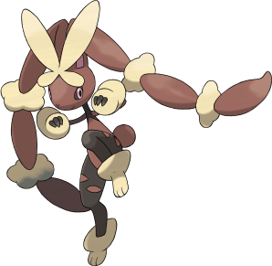
Confirmed Typing: Normal/Fighting
Confirmed Ability: Scrappy
Base stats: 65 HP / 136 Atk / 94 Def / 54 SpA / 96 SpD / 135 Spe
Mega Lopunny gains a typing previously only available to Meloetta-Pirouette, which grants it resistances to Rock, Bug, and Dark while also making it weak to Flying, Psychic, and Fairy. Its boost in Speed and huge increase in Attack make it much more threatening as an attacker than it is in its original form. The highly significant thing about this Mega Evolution is the addition of Scrappy, which will allow it to hit Ghost-type Pokémon with both of its STAB moves; this is especially crucial for its newly gained High Jump Kick, which can now be spammed without fear regardless of any Ghost-types on the opposing team. Lopunny's Drain Punch now gets STAB and can be used to heal off damage while dishing it out. It also retains its awesome support movepool to use with its increased Speed, which includes Thunder Wave, Encore, Baton Pass, and Cosmic Power, as well as the rare Healing Wish.
Mega Lopunny was an odd choice for a Mega Evolution, but it does show great promise. With a great base 136 Attack stat and base 135 Speed, Mega Lopunny looks to be a great physical sweeper. The deal is made even sweeter with a new-found Fighting typing, access to High Jump Kick, and the Scrappy ability. With this ability, this allows Lopunny to hit all Pokémon for neutral coverage with just its STAB moves alone outside of Shedinja. This allows Lopunny to put its unique support movepool to good use. With moves such as Healing Wish at its disposal, Mega Lopunny looks to be one of the absolute best offensive supporters we have ever seen. So where does this leave Lopunny? In my opinion, Mega Lopunny will be UU at the very least thanks to Scrappy letting its STAB combination go unresisted. While it certainly has use in OU, extreme competition for a Mega slot from the likes of Gallade, Pinsir, Latios, Latias, Charizard, and Manectric may ultimately hold Mega Lopunny back from gaining OU status.
Much like Gardevoir and Mawile, Lopunny never really saw much use in the competitive scene. Now, with her new Mega Evolution, Lopunny finally has a reason to be used in OU. With the aid of Scrappy, no Pokémon besides Shedinja boasts an immunity to Mega Lopunny's coverage options, and thanks to Lopunny's respectable base 136 Attack plus STAB moves with high Base Power (Return, High Jump Kick), she actually hits rather hard. Mega Lopunny also has quite a bounce to its step, thanks to its immense base 135 Speed, making it hard to revenge kill without the aid of powerful priority and/or Choice Scarf users. An expansive support movepool with immensely useful options, such as Healing Wish, Baton Pass, Magic Coat, Substitute, and Encore, which adds a hint of unpredictability to Mega Lopunny, makes it a dangerous foe for offense and balance to face. While the ubiquity of priority and powerful Choice Scarf users will keep Mega Lopunny in check, it's the competition it faces with other Mega Evolutions, such as Mega Metagross, Mega Salamence, and Mega Gardevoir, that will keep her from being the Mega Evolution of choice for some people.
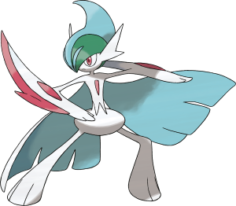
Confirmed Typing: Psychic/Fighting
Confirmed Ability: Inner Focus
Base stats: 68 HP / 165 Atk / 95 Def / 65 SpA / 115 SpD / 110 Spe
Mega Gallade gains increased Attack, Defense, and Speed. Many players agree that it could have received a much better ability than Inner Focus, but being immune to flinching can really come in handy when it matters, such as when facing Choice Scarf Jirachi. Mega Gallade will inevitably be compared with Mega Medicham as a Psychic / Fighting type attacker and wallbreaker, and they have a few notable advantages over each other. Mega Medicham is initially stronger because of its Pure Power ability, but Mega Gallade has access to Swords Dance, Earthquake, Leaf Blade, and the super-important Knock Off, whereas Medicham does not. Mega Gallade also falls into a better Speed tier and its Close Combat is a safer Fighting-type attack than Medicham's High Jump Kick, though it is slightly less powerful.
As the male counterpart to Gardevoir, many people expected Gallade to receive a Mega Evolution in ORAS. Sure enough, it did. Gallade retains its Psychic / Fighting typing while picking up Inner Focus as an ability. So, what can we expect from Mega Gallade? Well, Gallade has gotten a serious boost to its Attack and Speed stats, making it an even more dangerous sweeper than it already is. Add to this a solid boost to its lackluster Defense, and Mega Gallade has the potential to become a true powerhouse. Gallade is currently in the RU tier, where it faces stiff competition from the likes of Virizion, Hitmonlee, and Cobalion. This competition generally relegates it to using Substitute + Bulk Up or Assault Vest sets. However, a base 110 Speed after Mega Evolution changes everything for Gallade. Suddenly, it outspeeds key offensive threats like Meloetta, Cobalion, Virizion, Durant, and Moltres, thus opening the door for a possible Swords Dance set that can lay waste to much of the tier. Gallade will likely rise to OU, as its incredible Attack and great Speed allows it to pressure many teams. Its access to Swords Dance only serves to amplify the effectiveness of such sets, and it will likely replace Medicham as the Fighting-type Mega Evolution of choice on many OU teams.
It's pretty safe to expect Gallade to leave the depths of RU to join his counterpart Gardevoir in the land of OU with his Mega Evolution. Gallade already had an excellent offensive movepool with access to moves such as Swords Dance, Knock Off, Close Combat, Zen Headbutt, and Ice Punch to name a few, but his Speed and physical bulk were lackluster, making it mediocre in OU. The tables have turned now, and with his new blistering base 110 Speed, which allows it to tie with Latias and Latios as well as boosted physical bulk to tank strong priorities, Gallade will pose a threat to pretty much any balanced core and even stall teams, while still being useful against offense thanks to his natural offensive capabilities without a boost. There are many Pokémon it can force out to Mega Evolve and/or set up, and it will most likely live any hits coming from a revenge killer, granted it doesn't get hit on one of its weaknesses. All in all, we can expect Gallade to be a pretty popular Mega Evolution, much like Medicham, but with a better Speed stat and a better setup move.
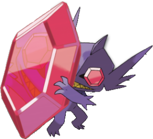
Confirmed Typing: Ghost/Dark
Confirmed Ability: Magic Bounce
Base stats: 50 HP / 85 Atk / 125 Def / 85 SpA / 115 SpD / 20 Spe
Yet another Mega Evolution that sacrifices Speed for other stat gains, Mega Sableye trades its ability to move first for a bit more offensive power and a great deal more bulk. Magic Bounce now finally belongs to a bulky Pokémon that can take a hit, as opposed to the other typical carriers of the ability; having respectable defenses and only one 2x weakness makes Mega Sableye an incredible user of Magic Bounce that doesn't have to be played so cautiously. It's also one of the few Megas that can make immediate use of its original form's ability before Mega Evolving. Access to Calm Mind, Recover, and Will-O-Wisp makes Mega Sableye a hard setup Pokémon to bring down, especially considering that Magic Bounce makes it immune to Roar, Whirlwind, and status moves like Toxic and Sleep Powder.
Mega Sableye won't make an enormous splash on the UU metagame compared to some of the other new Mega Evolutions, but it will definitely find a role for itself. Great 50/125/115 bulk with access to Recover and a typing that renders it only one weakness and a handful of resistances, as well as the ability Magic Bounce, all on top of access to Recover, means Sableye will be able to work as a solid counter to numerous defensive Pokémon in UU, particularly hazard setters, such as Mega Aggron, Hippowdon, Swampert, Arcanine, Chesnaught, Forretress, Donphan, and Trevenant. While it lacks the general annoyance of access to Prankster Taunt and Will-O-Wisp, thus making outright defensive sets on Mega Sableye a possible liability, it will definitely be a solid Calm Mind sweeper, burning physical attackers with Will-O-Wisp while blocking status and phazing moves, while also becoming unable to be hindered by Trick due to its Mega Stone being irremovable. Despite the Calm Mind set's ability to really hinder and eventually run through defensive Pokémon, both found in stall teams and balance cores in a manner not unlike that of Suicune, Mega Sableye still suffers from a weakness to Fairy-type Pokémon and wallbreakers, particularly Fire-types such as Darmanitan and Infernape, which can easily overwhelm it with the strength of their attacks, so teams using Mega Sableye will naturally want to have a strong supportive backbone to deal with its main checks to allow it to sweep later in a match.
While it may be a bit overshadowed by behemoths such as Salamence or Metagross, Sableye holds a lot of potential to be in OU, and if it won't, we can expect it to be a big threat in UU, if it doesn't get banned to BL. Sableye still has that anti-stall ability prior to Mega Evolving and now has great sweeping capabilities against more defensive teams. Even if it doesn't have much HP, its defenses are impressive enough to tank a lot of hits, especially with its access to Recover. Thanks to Calm Mind and Will-O-Wisp, Sableye looks to be pretty hard to take down once it gets going. For example, a fully invested Mega Sableye will only take up to 42% from Landorus-T's Earthquake, which is the most common Choice Scarf user in XY. Unlike many other slow setup sweepers, Sableye will be impossible to phaze, Taunt, or status with Magic Bounce. Shadow Ball is an excellent STAB move to possess, as it's one of the least resisted types in OU. All in all, Sableye's potential looks pretty promising.
Confirmed Typing: Water/Psychic
Confirmed Ability: Shell Armor
Base stats: 95 HP / 75 Atk / 180 Def / 130 SpA / 80 SpD / 30 Spe
Mega Slowbro gains a nice increase in Special Attack and a massive increase in Defense, which makes it able to deal considerable damage as well as put up with physical hits fairly easily. Its access to Calm Mind patches up its lower Special Defense and also cranks up its Special Attack, which is the perfect setup move for such a stat distribution. The Shell Armor ability is very important for Mega Slowbro, as it guarantees that critical hits cannot ruin its setup, and the fact that Knock Off doesn't get the damage boost from Mega stones makes it rather easy for Mega Slowbro to put up with that too, despite the weakness to Dark. It is sure to be difficult to damage and even more so after it gets going with Calm Mind boosts, and its choice of healing in Rest and Slack Off lets it perform in different ways.
As announced in its introduction video, Slowbro is going to be one of the sturdiest physical walls in the game. For example, Life Orb Bisharp will only do around 40-42% to Slowbro with Knock Off once it's Mega Evolved. If Slowbro was always a great physical tank, it now has some great sweeping potential as a CroCune-like standalone setup sweeper. For the record, CroCune is Suicune with a moveset consisting of Calm Mind, Scald, Rest and Sleep Talk. Now imagine this set on something even more bulky on the physical side, with a better Special Attack stat and without the possibility of getting hit by a critical hit once it gets going. That's pretty much Mega Slowbro. Its access to Regenerator pre-Mega Evolution will probably make you want to wait before clicking the Mega Evolution button, as it's a great tool in its arsenal early- to mid-game to check some physical sweepers such as Garchomp or Azumarill.
While Rest seems to be the healing move of choice on Mega Slowbro for many players, mainly so that it is not worn down by Toxic, I think that using Slack Off while paired with stall teams and a cleric is worth taking into consideration as well. Slowbro can then retain its Regenerator ability as it switches in and out through a match, and still be able to reliably heal off damage and use whatever moves it wants without having to worry about wasting a turn by getting Rest when Sleep Talk is used (the chance of getting Rest is higher than the chance of Focus Blast missing, which can be costly), and it also gives Slowbro room for a second attack like Psyshock or Fire Blast so that it isn't totally walled by something that's resistant or immune to Water.
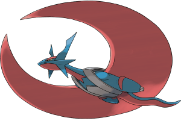
Confirmed Typing: Dragon/Flying
Confirmed Ability: Aerilate
Base stats: 95 HP / 145 Atk / 130 Def / 120 SpA / 90 SpD / 120 Spe
Mega Salamence gains an increase in all of its stats, mostly its Defense. It is able to make use of either Intimidate or Moxie in its original form before Mega Evolving, which can either make the foe easier to set up on or make a weakened foe bait for a nice +1 boost, respectively. Its newly acquired Aerilate ability allows Salamence to finally have a viable Flying-type STAB move, and it can actually be customized with many different Normal-type attacks. Special or mixed sets can work, considering that Salamence has Draco Meteor, Hyper Voice, and Fire Blast in its arsenal, but its sweeping approach with Dragon Dance is probably a lot more threatening than anything else it can do.
When Salamence was revealed to get a Mega Evolution in Pokémon Omega Ruby and Alpha Sapphire, there was a collective groan from DPP OU players around the world that remember how menacing it was back then. Salamence is back with a powerful punch thanks to its new Mega Evolution. Mega Salamence gets a serious boost to its Defense stat and decent boosts to all of its other stats. This is a fair trade-off, considering Salamence has always had the offensive stats to work with. What really sells Mega Salamence is Aerilate. With this ability, Mega Salamence is able to overpower all of the Fairy-types that have made it cry through XY OU. When using Mega Salamence, it is wise to ensure Salamence has Intimidate for its ability to make setting up on physical attackers a breeze due to the foe's Attack reduction and Mega Salamence's beefier Defense stat. With base 120 Speed, Mega Salamence will only need a single boost to outspeed all relevant Choice Scarf users in OU and even Ubers. Of course, Mega Salamence has the same great movepool its always had, meaning that it can easily take advantage of Aerilate on both its physical and special sets. Dragon Dance sets will obviously be more common, and thanks to Earthquake, very few Pokémon will be safe from the combination of Aerilate-boosted Return and Earthquake. Of course, Mega Salamence can also go the mixed route. Such a set would likely carry Earthquake and Roost while mixing and matching its Dragon-type STAB moves with Aerilate-boosted STAB moves in Outrage, Return, Hyper Voice, and Draco Meteor (Outrage with Hyper Voice and Return with Draco Meteor). Because of this extreme power and versatility, I fully expect Mega Salamence to quickly find itself in the Ubers tier. Unfortunately, this means that Mega Salamence will struggle to do much of anything due to the presence of Mega Rayquaza, which eclipses Mega Salamence in almost every way.
A few years ago, near the eve of DPP OU, the OU council of days past elected to exile Salamence to the Uber tier. However, the transition to BW proved that Salamence could live together with other OU-legal Pokémon; as such, it was dropped from the Uber tier. The XY changes actually caused Salamence to fall off the OU radar for quite a while, with the new Fairy-types and increased competition in OU being the main reasons for Salamence's fall. When it was announced that Salamence would gain a Mega Evolution in ORAS, I swear that you could hear the cries of competitive Pokémon fans everywhere, simultaneously exulting the fact that Salamence would now be relevant in OU again and lamenting over the fact that Mega Salamence would break the OU tier single-handedly. With its substantial Defense increase, more modest increases in other stats, and Aerilate to give it a better STAB to abuse, I don't think Mega Salamence will just become relevant. At a bare minimum, I'm expecting Mega Salamence to be a top OU threat. In fact, I'm fully expecting Mega Salamence to be the first of the new Mega Evolutions to be booted to the Uber tier, just as it was back in DPP OU. Mega Salamence's power (thanks in no small part to its Aerilate-boosted Normal-type attacks and mighty base 145 Attack) and ability to consistently find multiple set-up opportunities, thanks to its rather impressive 95 / 130 / 90 bulk, will cause it to be an incredibly centralizing force in OU if and until it gets banned once again.
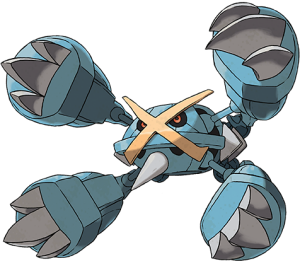
Confirmed Typing: Steel/Psychic
Confirmed Ability: Tough Claws
Base stats: 80 HP / 145 Atk / 150 Def / 105 SpA / 110 SpD / 110 Spe
Mega Metagross has all of its stats increased, with its change in Speed being very significant for it. It drops Clear Body for Tough Claws, a new ability that boosts the damage output of contact moves by 33%. This ability helps a lot of Mega Metagross's important moves and also gives a welcome boost to Thunder Punch and Ice Punch. It's also interesting to note that Grass Knot is boosted as well, which can help Mega Metagross get around more physically defensive foes such as Slowbro. The Mega stone also somewhat alleviates its weakness to Knock Off, which is a valuable asset.
Metagross used to be good back in the RSE and DPP OU days. The BW and XY nerfs hit it hard, which caused it to fall by the wayside for an inordinately long time. This made me sad because Metagross was and still is one of my absolute favorite Pokémon. Now, with its new Mega Evolution (which looks incredibly badass), it finally has a shot at relevance in OU once again. Boasting a rather large base 145 Attack and an equally eye-opening base 110 Speed, Tough Claws (which boosts most of its movepool), a defensively amazing Steel / Psychic typing, rather respectable 80 / 150 / 110 bulk, as well as a large movepool, Mega Metagross will be a threat that you should take into account when teambuilding at all times. This isn't to say that Mega Metagross is a one-trick pony, though. With its access to Agility / Rock Polish, Mega Metagross can take on the role of the sweeper, with the bonus of being nearly impossible to revenge kill. If that set is not to your speed (no pun intended), Mega Metagross has the movepool to become a wallbreaker and offensive pivot, breaking down walls so a teammate can sweep after it has done its job. While Metagross currently lurks in UU, be prepared to see its metal mug quite a bit in OU once ORAS is released. Now, if only we could get a move tutor to teach Shift Gear to Metagross...
Metagross was one of the first Pokémon people threw around as a contender for a new Mega Evolution when Pokémon Omega Ruby and Alpha Sapphire were announced, considering Steven Stone was the Champion of the original games. Those thoughts have become reality, and Mega Metagross does not disappoint. With a major increase in Speed as well as decent boosts to the rest of its stats, Mega Metagross is not something to be taken lightly on the battlefield. Mega Metagross drops the niche Clear Body for the useful Tough Claws. Tough Claws gives a 33% boost to most of Mega Metagross' primary attacks. This includes Meteor Mash, Zen Headbutt, Bullet Punch, Ice Punch, Hammer Arm, Thunder Punch, and even Grass Knot. This, in conjunction with Mega Metagross's access to Agility / Rock Polish, turns it into a terrifying late-game sweeper that is very difficult to revenge kill thanks to its base 150 Defense and resistance to Talonflame's Gale Wings Brave Bird. If sweeping with Agility / Rock Polish isn't what you need out of Mega Metagross, it has the capability to run a simple all-out attacker set that consists of any 4 of Meteor Mash, Zen Headbutt, Grass Knot, Earthquake, Hammer Arm, Ice Punch, Thunder Punch, Bullet Punch, and Grass Knot. Bullet Punch and a STAB move (Meteor Mash or Zen Headbutt) should almost always be used on non-Agility sets, but the other two slots can be used to better suit specific team needs. Mega Metagross will surely be a top threat in OU, but is unlikely to be banned, as the likes of Landorus-Therian, Skarmory, Mega Charizard X (in the absence of Earthquake), and Greninja can all keep it in check relatively well in most situations. However, even with these solid responses, Mega Metagross promises to be one of the defining forces in ORAS OU.
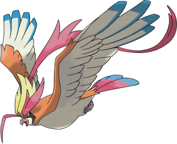
Confirmed Typing: Normal/Flying
Confirmed Ability: No Guard
Base stats: 83 HP / 80 Atk / 80 Def / 135 SpA / 80 SpD / 121 Spe
Mega Pidgeot receives a slight increase in defenses, a reasonable increase in Speed, and a massive increase in Special Attack. The typically shaky accuracy of Hurricane is made perfect by No Guard, which lets it fire off extremely strong Flying-type bursts of damage, with a generous 30% confusion chance on top of that. Unfortunately, though, No Guard also makes the moves of the opposing Pokémon perfectly accurate as well, which means that inaccurate moves such as Stone Edge will smash it without fail every single time. Unfortunately, Mega Pidgeot doesn't get any other decent special attacks outside of Heat Wave, but the support and utility from moves such as Roost, Defog, and U-turn can round out its movesets nicely.
Mega Pidgeot joins Staraptor and Talonflame as competitively viable early-game birds, though unfortunately it probably won't live up to the legacy of those two. 100% accurate Hurricane and a strong special inclination were great design choices by Game Freak to set Mega Pidgeot apart, but while it'll be a solid Mega in the lower tiers, it just doesn't have enough of an advantage over other Mega Evolutions to see serious use in OU or UU. Look for it to be fairly one-dimensional due to a lackluster movepool— it really only has Hurricane and Heat Wave as powerful attacking options, and relies on Hidden Power or U-turn to deal with anything else. I've seen some suggestions like Tailwind, Defog, and Roost, but the former is almost a waste of Mega Pidgeot's potential and the latter two come at an opportunity cost and depend on Mega Pidgeot taking a hit with its only average defenses.
Regular Pidgeot will probably not have too much difficulty ensuring its Mega Evolution despite overall mediocre defenses, thanks to a solid initial base 101 Speed and the fact that No Guard kicks in as soon as it Mega Evolves, making Hurricane a perfectly safe option all the time.
Oh, Pidgeot. I have such found memories of how I used you in the original Red and Blue games; raising you from that Pidgey I caught on Route 1, Flying around with you, catching Legendary Pokémon with your help, and becoming League Champion. Nostalgia aside, Mega Pidgeot was a bit of a surprise when it was announced. While it retains the same Normal / Flying typing, it does gain No Guard for its ability. No Guard seems like a pointless idea on a Pokémon weak to Stone Edge, Thunder, and Blizzard, but let's not forget that Pidgeot has access to Hurricane, a powerful 110 BP STAB move with only 70% accuracy. That is, until now. Now, Mega Pidgeot is able to abuse a 110 BP STAB move with absolutely no worries or fears of missing its target. Mega Pidgeot receives a massive boost to its Special Attack as well; The +65 boost is the biggest boost to any one single stat for any Mega Evolution to date. This promises to allow Pidgeot to hit very hard with its perfectly accurate Hurricane. Pidgeot also has access to Heat Wave to nail Steel-types that look to tank Hurricane, and benefits from No Guard as well. While Pidgeot's relevant special movepool essentially ends there as it stands, a small boost in its bulk may allow it to make good use of Roost and Defog to make for a reliable offensive supporter. While it may have been next to useless in competitive battling since its early days, Pidgeot is sure to be a relevant force now. Odds are, Pidgeot will land in either RU or UU. Both are very real possibilities, but RU seems more likely, as Mega Pidgeot isn't as fast as it would like to be and has an extreme vulnerability to Stone Edge thanks to No Guard.
Unlike what some might think, I believe that Mega Pidgeot actually has some potential to be successful in XY UU and OU. Mega Pidgeot is fast and gets to throw around No Guard Hurricanes, which are strong and generally difficult to tank unless resisted. Its coverage is augmented by Heat Wave to mess up Steel-types like Ferrothorn, Scizor, and Skarmory. Though one-dimensional, with U-turn to keep momentum on its side—potentially combined with a Pokémon like Dugtrio to trap Electric-types and Heatran—and a Hidden Power (Grass for Rotom-W or Ground for Heatran), Mega Pidgeot could put in some serious work against offensive and balanced builds with its high Speed and perfect accuracy Hurricane.
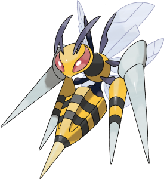
Confirmed Typing: Bug/Poison
Confirmed Ability: Adaptability
Base stats: 65 HP / 150 Atk / 40 Def / 15 SpA / 80 SpD / 145 Spe
Mega Beedrill is probably the most extreme change of them all, and for good reason. Beedrillite transforms what is arguably one of the worst Pokémon in existence into an offensive nightmare. It has its useless Special Attack stat decreased to compensate immensely for its stats that matter the most. With an insane base 150 Attack and a blazing fast base 145 Speed, Beedrill is going to be hitting harder and faster than ever before. In addition, it gains Adaptability to give its STAB attacks even more of a sting. With access to U-turn, Drill Run, and Knock Off, it will be hitting even the things that resist its STAB moves very hard, though it will have to be careful because its Defense stat is pitiful; Mega Beedrill is the very definition of glass cannon.
The way Game Freak distributed Mega Beedrill's stats is absolutely hilarious; I can't believe they took 30 out of its Special Attack stat just to make sure the boosts to both Attack and Speed were enough (even though it definitely needed it). Mega Beedrill has some pretty solid offensive stats to work with now, to be honest, especially with Adaptability tacked on to boost the Base Power of all its moves. It has one of the strongest U-turns in the game (it's on par with Choice Band Scizor's, lol) and more than enough Speed and switch-forcing ability to use it well, and after it's done spamming U-turn to wear down the opposing team, it can usually come in and clean up what's left with its other STAB moves or Drill Run quite easily, at least in theory. I could see a Swords Dance set being viable on Mega Beedrill too, although it's a bit hard to set up and vulnerable to priority. The fact that it's still so slow before Mega Evolving is a bit of a pain, though.
Since its announcement, Mega Beedrill has been hyped a lot, and rightfully so. In its (almost definitely) short time in NU, I expect it to be a major threat, although not unbeatable, due to the presence of counters like Mega Steelix. But even those aren't unbeatable if Beedrill has U-turn and just a little bit of support. During its time in NU, expect Mega Beedrill to push the metagame to something even more offensive than it is now, because very few Pokémon on stall will want to stand up to it.
I don't think anyone at all would have expected 150 Attack and 145 Speed out of Mega Beedrill. It's going places, and it's going there FAST. When all's said and done, I think Mega Beedrill will be sitting somewhere around the OU-UU limbo, perhaps even chillin' like a villain in BL depending on the whims of the UU councilmen and their overlord, koko "hypes Mega Beedrill in UU" loko. Mega Beedrill seems as though it will almost always need Protect on every one of its sets, due to its pitiful defenses and bad initial Speed. This cuts into its potential, preventing sets like Swords Dance + 3 attacks (STAB moves + Drill Run) and maybe even Substitute sets. Mega Beedrill will serve essentially as a Scizor with more Speed and probably little else, though Fell Stinger gimmicks sound like a blast. I'd put a lot of money on Mega Beedrill being one of the first Mega Evolutions suspected from one or both of RU and NU, and it'd most definitely deserve it.
Well done, Game Freak, on making one of the worst Pokémon OU-viable. With possibly the best stat increases of all Mega Pokémon, Mega Beedrill is very threatening, but don't make the mistake of thinking that it's broken just by its insane Attack, ability, and Speed. The first problem with its supposed viability in OU is that there is way too much priority around. Beedrill is weak to Stealth Rock, and after taking that damage, Choice Band Azumarill's Aqua Jet and Mega Metagross's Bullet Punch knock it out, with Mamoswine's Ice Shard sometimes KOing it as well. Talonflame and Thundurus can also revenge kill it or paralyze it, respectively. The faster-paced metagame means that Choice Scarf users are a little more common, and pretty much every common Choice Scarf user knocks out Beedrill. This isn't so bad, though, because although Beedrill has to run Protect in order to Mega Evolve safely, which lets it scout which move its opponent chose. Along with Protect, it runs U-turn and Poison Jab due to Adaptability, and then Drill Run or maybe Knock Off in the last slot. Unfortunately, its STAB attacks don't provide amazing coverage, as a few Pokémon can always switch in, such as Landorus-T, Gliscor, Ferrothorn, and Skarmory. However, Mega Beedrill is a really good pivot, as its U-turn is one of the most spammable attacks in the game. It will very likely be OU, and although it has a good number of answers, it's always going to find many opportunities to come in on something that it can threaten safely and either do massive damage or gain momentum with U-turn, or maybe even clean up late-game.
Confirmed Typing: Ice
Confirmed Ability: Refrigerate
Base stats: 80 HP / 120 Atk / 80 Def / 120 SpA / 80 SpD / 100 Spe
As far as typing and abilities go, Mega Glalie doesn't gain anything too surprising. It gets a nice Speed increase as well as reasonable stat gains in both Attack and Special Attack. The Refrigerate ability isn't very surprising for it either, as it's an Ice-type, but Mega Glalie's real claim to fame is having an Ice-type Explosion because of its ability. This Explosion has a godly 487.5 Base Power, it hits Ghost-types, and most importantly: it's actually super effective on things. Glalie's improved stats should allow it to use Taunt and set Spikes more easily, and its coverage with Refrigerate-boosted Return and Earthquake is nearly unresisted, making it certainly more viable than before, but it also takes up a Mega slot that could be used for other things.
Mega Glalie is my favorite new Mega Evolution. It's absolutely one-dimensional, but that one dimension is excellent. Physically-based wallbreaker Glalie is an enormous threat to defensive teams unless you have a well-timed Protect or a bulky Water-type. Refrigerate Explosion hits like a freight train, OHKOing 252/252+ Skarmory 82% of the time after SR — with a Jolly nature. That's just plain absurd for a single attack. Glalie sitting in the lower tiers will be a force to be reckoned with, even with baddies like Alomomola sitting around in RU... I honestly doubt Mega Glalie will leave NU, but it'll be great there and maybe as an underrated Mega Evolutions in the tiers above for specific teams.
It can even make use of the great base 120 Special Attack buff it gets to run some kind of covera-... oh, nevermind. It's got absolutely nothing of note there that doesn't get outdamaged by its physical set in the first place. Explosion nearly does more than Hyper Beam of all things against some of the most physically bulky Pokémon in existence running a 252 HP / 252+ Def spread.
Mega Glalie will be a monster. While Ice isn't the best defensive typing in the world, it is amazing offensively. Refrigerate-boosted Return or Double-Edge will do a huge amount to anything while Explosion will just be a fantastic tool to remove a threat and open up the way for its teammates. It even has Earthquake to hit those Steel-types that might think they can safely switch into Glalie. It also has access to Taunt to prevent recovery, status, and entry hazards, and it has Spikes, which can be cool to set up when predicting your opponent to switch out, which will make it easier for Glalie to get some 2HKOes or OHKOes while also supporting its team. Unfortunately, it might not make into OU, as it can have some difficulty breaking bulky Water-types and faces a lot of competition with the other strong Mega Evolutions, but it will certainly be a threat in the lower tiers.
While not as big of a shock as Mega Steelix, most people expected Mega Walrein if an Ice-type from Hoenn were to receive a Mega Evolution. However, Game Freak decided to bestow upon Glalie a Mega Evolution. While it remains a pure Ice-type, it gets significant buffs all around. A much more useful ability in Refrigerate and significant boosts to its offenses make Mega Glalie a threatening powerhouse. Most notably, this gives Glalie an Ice-type Explosion, meaning that for the first time in history, there is a Pokémon that can use Explosion without fear of it being blocked by a Ghost-type. In fact, the Refrigerate boost to Explosion virtually ensures Glalie will take something down with it when using the move. For more conservative players, there's the always-reliable Return to hit hard without sacrificing Mega Glalie. With access to Taunt, Spikes, a better Speed stat, decent coverage in Earthquake, and the strongest Explosion to date, Mega Glalie looks to rise from the depths and make its presence felt. Mega Glalie will likely make it into UU with some niche use in OU, thanks in large part to its access to Refrigerate-boosted Explosion. The power of this move can seriously damage or outright KO just about any Pokémon without a 4x resistance to Ice, giving Mega Glalie the ability to sacrifice itself to potentially remove the most dangerous Pokémon on the opponent's team.
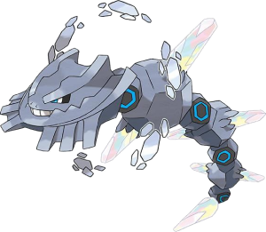
Confirmed Typing: Steel/Ground
Confirmed Ability: Sand Force
Base stats: 75 HP / 125 Atk / 230 Def / 55 SpA / 95 SpD / 30 Spe
Outside of an obvious increase to its stats, Mega Steelix unfortunately does not gain anything worth noting. Its typing remains the same and its ability requires sand to activate, which is probably more trouble than it's worth in Single Battles. Almost everything Mega Steelix can do is done better by Mega Aggron, which has less weaknesses, a better ability in Filter, and access to Thunder Wave. Mega Steelix's only advantages over Mega Aggron are that it gets STAB with Earthquake, has an immunity to Electric, and has slightly higher overall bulk. Sand Force may be useful for it in a Double Battle or Triple Battle alongside Tyranitar.
While at first glance, Mega Steelix didn't gain as much as other Mega Evolutions such as Mega Salamence and Altaria, it got a big enough buff to have a strong niche over regular Steelix. Thanks to its base 230 Def stat, Mega Steelix with no investment in Defense has a similar Defense stat as a fully invested Steelix. This is amazing, as it lets Mega Steelix invest in its other stats, meaning it can go with a more specially defensive build to handle Psychic- and Electric-types more easily or go on a more offensive route and invest in its good base 125 Attack to have a stronger Earthquake and Gyro Ball / Heavy Slam. Those buffs were probably not enough to make it a good choice on a OU team, but I am sure that it will be a threat in the lower tiers.
Mega Steelix was a pretty big surprise and was only discovered as players began playing the demo version of Pokémon Omega Ruby and Alpha Sapphire. With a +40 boost to its Attack and +30 boost to both of its defenses, it seems Mega Steelix has gotten all the right boosts to become stronger and bulkier than ever. It's a shame that Mega Steelix doesn't get a Speed boost to take better advantage of its new Sand Force ability, but you can't get everything. Steelix seems really solid, but competition from Mega Aggron will likely keep Steelix in the RU tier. Mega Aggron has a better ability, pure Steel typing to remove a Water weakness and neutrality to Ice and Grass, and access to Thunder Wave to support its team. However, in RU, Steelix faces no such competition and should be one of the top Mega Evolutions choices for balance teams as a Knock Off shield and strong check to most physical attackers.
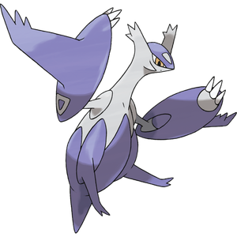 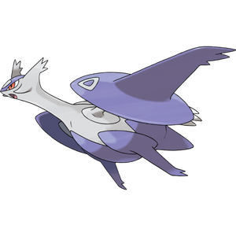
Confirmed Typing: Dragon/Psychic
Confirmed Ability: Levitate
Latias's base stats: 80 HP / 100 Atk / 120 Def / 140 SpA / 150 SpD / 110 Spe
Latios's base stats: 80 HP / 130 Atk / 100 Def / 160 SpA / 120 SpD / 110 Spe
Mega Evolutions for this legendary Hoenn pair were actually leaked in advance, so fans have known about them and have anticipated their arrival for a while now. It was theorized, partly because Latios and Latias looked so similar in their Mega forms, that the Soul Dew item would serve as the Mega stone that would Mega Evolve both of them, but it was later revealed that they have totally separate stones in the Latiasite and Latiosite. Both Latias and Latios gain increases to all of their stats except Speed, which was already reasonably high for both of them. Latios becomes an even more powerful sweeper that welcomes the gain in physical power as well as physical bulk, while Latias becomes more powerful and more difficult than ever to take down from both sides.
Mega Latias was actually in the coding of Pokémon X and Y, but was apparently a late scratch in terms of receiving a Mega stone in those games. Many wondered why this was, but when Pokémon Omega Ruby and Alpha Sapphire were announced, it all made sense. Latias is exclusive to Pokémon Alpha Sapphire, so it stands to reason that her Mega Stone will be exclusive to that game as well. She gets a +30 boost to Defense and Special Attack as well as a +20 boost to Special Defense and Attack. While the Attack boost will largely be pointless, the boosts to Latias's defenses and Special Attack will help to make her even better at tanking attacks and dishing them back out. A bulky Defog set will likely continue to be Latias's primary set, and the added bulk from Mega Evolution will only serve to aid such a set. Calm Mind is likely to become an even better option thanks to Mega Latias's boosted Defense stat. With these great stat boosts, ability to support the team with Defog, or attempt a sweep with Calm Mind, Mega Latias will surely be a top Mega in the OU tier, and could even see some use in Ubers.
Much like his sister, Latios's Mega was in the coding of Pokémon X and Y, but there was no Mega stone found within the final version of the games. With the release of Pokémon Omega Ruby and Alpha Sapphire, Mega Latios seems to be one of the main Mega Evolutions to receive attention, and for good reason. With a sizable boost to his offenses; +40 Attack and +30 Special Attack to be exact, as well as a +20 boost to Defense and +10 Special Defense boost, Mega Latios appears as if he will be a true powerhouse. The major Attack boost means Dragon Dance sets may finally have an opportunity to shine. Many people forget that Latios gets the move, but that's only because he had been previously outclassed in this role by Rayquaza, Salamence, and Dragonite depending on if Latios was being used in Ubers or OU. Calm Mind sets figure to be more dangerous than ever thanks to Mega Latios's great Special Attack and Special Defense. While we can't be certain if a mixed set would possibly work for Mega Latios, one certainly has to consider his 130 / 160 offenses and pretty good base 110 Speed stat to back him up. Whether sweeping with Dragon Dance or Calm Mind, or possibly breaking down tough walls, Mega Latios promises to be one of the strongest Mega Evolutions to be introduced in Pokémon Omega Ruby and Alpha Sapphire. Mega Latios is likely to remain OU. While Calm Mind sets may seem to be devastating with Mega Latios's higher Special Attack, his inability to hold Life Orb in his Mega form alleviates this issue. Dragon Dance sets will certainly make him more difficult to outright counter though, so OU teams will need to be ready.
Mega Latias is a threat. It got a nice increase in bulk and is amazingly fast for a Pokémon with its defenses. Similar to the mono-attacking Mega Salamence set that's annihilating ORAS OU so far, a Substitute / Calm Mind / Roost / Stored Power set can be very effective if it has enough team support to take care of Dark-types, among other things. Mega Latias can afford to invest pretty heavily in bulk, which allows it to set up on quite a few Pokémon despite its underwhelming defensive typing. Stored Power is a great new move that Latias gets in ORAS, but unfortunately Mega Latias needs two Calm Minds under its belt, or perhaps the rare boosts that it received from a teammate via Baton Pass, in order to start doing good damage. Psychic is not the best offensive type, and there are a lot of Pokémon which wall this set, but this thing can be menacing late-game. I suppose Hidden Power Fire is an option, which gives Latias nearly perfect coverage (Heatran still walls it, but Roar isn't uncommon), although the sacrifice of a moveslot makes it much harder for Latias to set up, and might, for example, leave it open to being hit with Toxic if it forgoes Substitute. This Mega Latias set is pretty high-risk, high-reward due to the team support required, but it can definitely tear through unprepared teams.
I actually don't see Mega Latios being used a whole lot. Mega Latios is by no means a bad Pokémon; it's a very good one, but it's not really a whole lot better than regular Latios is, which means it's often better to run a different Mega Pokémon and regular Latios than it is to run Mega Latios. Mega Latios has the same Speed as Latios, and on the special side, it's outdamaged by Life Orb Latios by a decent amount. Really, one of the only reasons to use Mega Latios is for its slightly better Dragon Dance capabilities. On the physical side, Mega Latios is barely stronger than Life Orb Latios, and the fact that Mega Latios doesn't take Life Orb recoil and that it got slightly boosted defenses means it has a little more longevity. I don't see a bulky set working well because that's better left to Mega Latias. Zen Headbutt isn't the most amazing STAB attack, and essentially Mega Latios is only good because Latios is already so good. You're probably better off using a different Mega.
Mega Latias is an incredible tank and deadly sweeper. It is extremely bulky, being able to survive Pursuits from Tyranitar as well as Bisharp, while also easily tanking any hit from Choice Specs Keldeo. With ORAS' release, it has been blessed with a new move, Stored Power. This allows Mega Latias to set up on a plethora of 'mons, such as Clefable, Mega Slowbro, Ferrothorn, Heatran, and many more. Substitute / Calm Mind / Stored Power / Roost will be a deadly set. With its increase in bulk, Mega Latias does not even need Speed investment; it can tank hits that well. With the right support (i.e. teammates that can take on and beat Dark-types), Mega Latias is sure to shine in the OU tier.
Confirmed Typing: Rock/Fairy
Confirmed Ability: Magic Bounce
Base stats: 50 HP / 160 Atk / 110 Def / 160 SpA / 110 SpD / 110 Spe
Mega Diancie exchanges its previously more defensive approach for a much more offensive one that can still take hits reasonably well. A base 160 Attack and Special Attack, supported by base 110 Speed, is nothing short of incredible. It drops Clear Body for Magic Bounce, which guarantees that it cannot be targeted by status moves during its setup. However, it is unfortunate that Diancie does not get Power Gem or Play Rough; this means that it will be forced to go mixed and can't put all its investment into one stat while using a negative nature that decreases the offensive stat you won't be using. It can use the subpar Ancient Power, or Hidden Power Rock for higher PP, but that's about all. Nonetheless, it is a very strong Mega Evolution that should not be underestimated.
Mega Diancie got some major buffs, including a dramatic Speed increase up to base 110 and dual base 160 offenses. Suffice it to say that Mega Diancie definitely has some potential in ORAS OU. The Calm Mind set will be the most effective variant by far, taking advantage of Magic Bounce to set up on the likes of Mew and utilizing its great 50 / 110 / 110 bulk combined with its stellar Rock / Fairy typing to gain setup opportunities against common Pokémon like Talonflame. ORAS move tutors gifted it with Earth Power, allowing it to break through Heatran, which was previously a great counter to it. It also has a bit of a niche in checking Mega Salamence for as long as that is legal. Depending on its coverage move, though, Mega Diancie can be walled by common Pokémon like Ferrothorn, Chansey, Scizor, and Mega Venusaur. Furthermore, its Speed before Mega Evolving is rather mediocre, which can make taking advantage of its great Speed difficult when it's needed most, and the new Mega Metagross isn't helping its case. As a result, Mega Diancie will probably hang out in the lower end of OU or BL, but will be a force to be reckoned with its high Special Attack and powerful STAB Moonblast.
Mega Diancie was probably the most shocking Mega Evolution to be announced. It gets an incredible +60 boost to both attacking stats as well as Speed. However, this has to come from somewhere, and both of Diancie's defenses were lowered by 40 to compensate for such a large offensive boost. While this may seem to turn Diancie into an offensive juggernaut, its inability to learn Play Rough or Power Gem makes going fully physical or special very difficult. However, what Diancie does gain is a cool new ability in Magic Bounce. While this may not seem amazing at first on such an offensive Pokémon, Diancie has access to Calm Mind, Rest, and Sleep Talk, which allows it to use a mono-attacking set to great effect. This is made even sweeter by Magic Bounce, which prevents status moves from affecting it, including Roar, Whirlwind, and Toxic. What's more is that Diancie is a Fairy-type, meaning that it resists Knock Off (and doesn't have its item taken away due to being a Mega Evolution) and is immune to Dragon Tail, the most common phazing move outside of Roar and Whirlwind. This will make it incredibly difficult to stop Mega Diancie once it gets a Calm Mind boost or two, and thanks to the sharp increase in Special Attack, it won't need many boosts to start dealing major damage with its STAB Moonblast. Mega Diancie will still be held back by its painfully low base 50 HP and competition from Mega Slowbro in OU, but Mega Diancie should find a home in UU as one of the more threatening late-game sweepers in the tier.
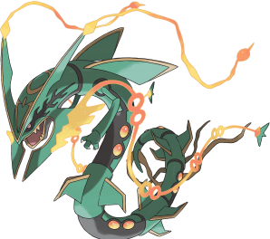
Confirmed Typing: Dragon/Flying
Confirmed Ability: Delta Stream
Base stats: 105 HP / 180 Atk / 100 Def / 180 SpA / 100 SpD / 115 Spe
Rayquaza is sure to shake up Ubers with its all-powerful new Mega Evolution. All of its stats are increased, including a highly significant Speed improvement and an obscene base 180 Attack and Special Attack. The real kicker here, though, is Mega Rayquaza's new ability, Delta Stream, which removes all weather conditions to summon a never-before-seen weather called Strong Winds. This weather condition not only blocks moves that cause other weather, but it also negates all Flying-type weaknesses while Mega Rayquaza is on the battlefield. This effectively halves Rayquaza's Ice weakness, removes its Rock weakness, and makes its neutrality to Electric a resistance. It has also received the new attack, Dragon Ascent, which functions as a Flying-type Close Combat, strong and reliable but lowering the user's defenses immediately after use. Now that it finally has a viable Flying-type STAB move, it is likely to shift Ubers in quite a few ways.
Mega Rayquaza is one of the most terrifying Pokémon to be released in ORAS, with amazing offensive stats, 100 / 100 defenses, and an amazing base 115 Speed, which allows it outspeed a lot of the faster threats in Ubers such as Palkia, Xerneas, Yveltal, Genesect, and 0 Speed Arceus. With that and more, Mega Rayquaza can be seen doing a lot in ORAS Ubers. It also got a new signature move called Dragon Ascent with a very nice Base Power of 120, which, in my opinion, made (Mega) Raquaza "perfect"; one of the issues it had in the past was a lack of a good Flying-type move that it could abuse, and now it is here. Dragon Ascent gives it a lot of wallbreaking potential, as it doesn't need to run V-create to create havoc to any team. Something that can't go unnoticed is Mega Rayquaza's new ability, Delta Stream, which reduces its Flying-type weaknesses by half, making Ice-type moves hit it for 2x damage instead of 4x; that, in my opinion is huge, as some Pokémon like Lugia and Rock Arceus, which otherwise would be direct counters to it just fail to accomplish such thing and best they can do is either phaze it or burn it with Will-O-Wisp, in Arceus's case, all of that thanks to Delta Stream. This ability can also remove Primordial Sea and Desolate Land, which will definetely be important in this metagame. Mega Rayquaza will sure be one of the metagame-defining Pokémon in ORAS.
The Dragon Dance set is going to be extremely difficult to revenge kill, because Rayquaza's excellent 115 Speed stat outruns all viable Choice Scarf users in Ubers at +1. Hyper offensive teams will need to rely on Stealth Rock + offensive pressure + Extreme Killer's STAB Extreme Speed in order to beat this thing, as Delta Stream will give Rayquaza plenty of setup opportunities with the lack of STAB Ice moves found in the tier. Rayquaza is also incredibly hard to check in general. Life Orb Deoxys-A can OHKO Rayquaza with Psycho Boost, but is KOed by Extreme Speed before it can even get an attack off. Heatran possesses an immunity to V-create and resists Rayquaza's STAB moves, but falls to a simple Earthquake. Max Speed support Arceus formes can attempt to burn Rayquaza before it sets up, but don't forget about Rayquaza's equally barbaric 180 Special Attack! Arceus formes will take 68-80% from Draco Meteor, assuming Rayquaza runs max Special Attack, putting them in range to get picked off by ExtremeSpeed the following turn. Mega Rayquaza is going to be terrifying for all team archetypes to deal with and will be a defining force in the ORAS Ubers metagame.
Game Freak has announced that Rayquaza achieves Mega Evolution in a way that has never been seen before. It has been revealed that Dragon Ascent is not a level-up move for Rayquaza in ORAS, which means that either the move will have to be tutored for it to gain its Mega Evolved form (sort of similar to Keldeo-Resolute) or that it will have to have a certain move on its set that will be replaced with Dragon Ascent upon Mega Evolution (similar to Kyurem's Scary Face being replaced with Freeze Shock or Ice Burn for its change to Kyurem-Black or Kyurem-White, respectively). The truly scary possibility presented here is that Mega Rayquaza may be able to hold an item other than a stone as other Mega Evolutions require. If that turns out to be case, this thing will break Ubers and likely find itself sentenced to wherever Moody was banned to. Ready to find out?
| « Previous Article | Home | Next Article » |